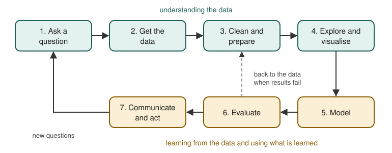

Chapter 1: The Data Science Workflow¶
What data science is, how a project runs, and a first analysis
Learning outcomes
After this chapter you should be able to:
- explain in plain words what data science is and what it is not;
- turn a vague wish ("use the data") into a question that data can answer;
- name the seven stages of a data science project and say what happens in each;
- classify a variable as numerical (continuous or discrete) or categorical (nominal or ordinal);
- recognise a tidy table, with one row per observation and one column per variable;
- carry out a small analysis in plain Python and repeat it in pandas.
Data science is the practice of learning useful things from data. It borrows from statistics (how to reason from a sample to a population, and how sure to be), from computing (how to store, transform and process data at scale) and from the subject the data comes from (what the numbers mean, and which questions matter). This chapter gives the map of the whole book: the stages a project passes through, the kinds of data you will meet, the tools you will use, and a first small analysis that touches every stage.
1.1 What data science is¶
A shop keeps a record of every sale. A hospital records the temperature of every patient each morning. A weather station logs rainfall every hour. A website records which pages each visitor opens. None of these records was collected to answer a particular question, but each holds answers to many: which products sell together, whether a ward has more fevers than usual, whether the monsoon came late, which page makes visitors leave.
Data science is the work of getting those answers out reliably. A typical piece of work starts with a question, finds or collects data that bears on it, cleans the data until it can be trusted, explores it to understand what it contains, perhaps builds a model that predicts or explains, checks how good the model is, and finally communicates the result so that someone can act on it.
Three kinds of result come out of this work:
- Description: what happened? (Average sales per day last month; the number of patients by ward.)
- Inference: what can we conclude beyond the data we have? (Is the new layout of the shop really better, or did we see a lucky week?)
- Prediction: what will happen for a new case? (Will this customer return? How much rain will fall tomorrow?)
Description is the most common and the most underrated: a clear, correct table often answers the question outright. Inference needs probability, because it reasons from a sample to something larger. Prediction needs models that are judged on data they have not seen.
Key idea
Data science is not a single technique. It is a workflow that turns a question and some data into an answer that can be trusted, and most of the work is in the steps around the model, not in the model itself.
What data science is not¶
It is not the same as machine learning. Machine learning is a set of methods for building models from data, and it is one stage of the workflow (Chapters 8 to 11 of this book). A project that never fits a model, and ends with a well-made chart and a confidence interval, is still data science.
It is not the same as statistics either, though it overlaps with it heavily. Statistics supplies the reasoning about uncertainty that every honest analysis needs (Chapter 7). Data science adds the programming that makes it possible to handle messy, large or unusual data, and it puts more weight on prediction than classical statistics usually does.
And it is not magic. A model can only find patterns that are present in the data it is given. If the data is biased, incomplete or measured wrongly, the conclusions will be too, however advanced the method.
1.2 Questions come first¶
The most common way for a project to fail is to start without a clear question. "Here is our sales data, find something interesting" usually leads to a pile of charts that nobody uses. A good question has three properties.
- It is specific. "Do customers like the new menu?" becomes "Did the average number of items per order change in the four weeks after the new menu, compared with the four weeks before?"
- It is answerable with data you have or can get. If the data does not record what customers ordered, the question cannot be answered, however clever the analysis.
- Its answer would change something. If no decision depends on the answer, the work is a curiosity, not a project.
It also helps to say in advance how the answer will be judged. For a description, it might be "a table of weekly totals that the manager agrees matches the till receipts". For a prediction, it is a measure of error on new data, such as "the forecast should be within 10% of actual sales on most days".
Example 1.1: Sharpening a question
A school wants to "use its attendance data". Three sharper versions:
- Description: In which months of last year was average daily attendance lowest, and by how much?
- Inference: Is attendance on Mondays lower than on other weekdays by more than chance would explain?
- Prediction: Given a student's attendance in the first two months, can we flag students likely to fall below 75% attendance by the end of the year, so that teachers can contact families early?
Each version names the data needed (daily attendance by student and date), the comparison or target, and what would be done with the answer.
1.3 The workflow¶
Every project in this book passes through the same seven stages, shown in Figure 1.1. Real projects loop: exploring the data reveals problems that send you back to cleaning, and a poor model sends you back to the data.

1. Ask a question. Decide what you want to know and how the answer will be judged (Section 1.2).
2. Get the data. Data comes from files (CSV, spreadsheets, JSON), from databases queried with SQL, from web services, from sensors, from surveys, or from experiments you design. Record where it came from and when: you will need to say so later, and you may need to fetch it again.
3. Clean and prepare. Real data has missing values, duplicate rows, impossible values (a negative age), inconsistent spellings ("Delhi", "delhi", "New Delhi"), numbers stored as text, and dates in several formats. Cleaning is where much of the time goes, and it is where mistakes are easiest to make and hardest to see. Chapter 5 is about it.
4. Explore and visualise. Before modelling, look: summary statistics, counts of categories, histograms, scatter plots, relationships between variables. Exploration often answers the question by itself, and it always tells you whether the data is fit for the purpose. Chapter 6.
5. Model. A model is a simplified description of how the data arises, written so that a computer can use it: a straight line relating price to size, a rule that sorts emails into spam and not spam, a grouping of customers into similar types. Chapters 8, 9 and 11.
6. Evaluate. How good is the model, measured on data it did not see while it was being built? Is it better than a trivial baseline, such as always predicting the average? Chapter 10.
7. Communicate and act. Write the result so that the person who asked can understand it and use it: a short report, a chart, a table, a model running inside an application. Say how confident you are and what the limits are. Chapter 13 adds the ethical side: privacy, fairness and making the work reproducible.
Caution: the stages are not equal in size
Beginners expect most of the time to go on modelling. In practice getting, cleaning and exploring the data usually take far longer than fitting a model, and they matter more: a simple model on clean, well-understood data beats an elaborate model on data nobody has checked.
1.4 Kinds of data¶
Most data in this book is tabular: a table in which each row is one observation (a sale, a patient, a day) and each column is one variable (a measured or recorded property, such as price, temperature or city). Variables come in a few kinds, and the kind decides which summaries and plots make sense.
| Kind | Sub-kind | Examples | Sensible summaries |
|---|---|---|---|
| Numerical | Continuous | height, temperature, price, time taken | mean, median, standard deviation, histogram |
| Numerical | Discrete (counts) | number of children, items in an order | mean, median, counts of each value |
| Categorical | Nominal (no order) | city, blood group, product type | counts and proportions, bar chart |
| Categorical | Ordinal (ordered) | rating 1 to 5, education level, size S/M/L | counts, median, proportions |
| Other | Date and time | date of sale, timestamp of a click | ranges, counts per period, trends |
| Other | Text | reviews, emails, comments | word counts, frequent words (Chapter 12) |
Table 1.1. The kinds of variable and the summaries that suit them.
A number is not always a numerical variable. A PIN code or a roll number is written in digits, but adding two PIN codes is meaningless: they are labels, so they are categorical. Ask whether arithmetic on the values means anything. Conversely, an ordinal variable such as a rating from 1 to 5 is often averaged in practice; that is reasonable when the gaps between ratings are roughly equal in meaning, but it is a choice you should notice you are making.
Tidy data¶
A table is tidy when:
- each variable is a column,
- each observation is a row, and
- each kind of observational unit has its own table.
Here is an untidy table of rainfall, with one column per month:
| Station | Jan | Feb | Mar |
|---|---|---|---|
| North | 12 | 8 | 15 |
| South | 30 | 25 | 41 |
Table 1.2. Rainfall in millimetres, in a wide (untidy) layout.
The month is a variable, but it is hiding in the column headings. The tidy version has one row per station and month:
| Station | Month | Rainfall_mm |
|---|---|---|
| North | Jan | 12 |
| North | Feb | 8 |
| North | Mar | 15 |
| South | Jan | 30 |
| South | Feb | 25 |
| South | Mar | 41 |
Table 1.3. The same data in a long (tidy) layout.
The wide table is easier for a person to read; the long one is easier to filter, group, plot and model, because every variable can be named. Chapter 5 shows how to convert between them with pandas (melt and pivot).
Note: structured and unstructured data
Tables are structured data. Text, images, sound and video are called unstructured, because they do not arrive as rows and columns. Much of the work with unstructured data consists of turning it into a table of features: for example, turning each review into counts of words (Chapter 12).
1.5 The tools¶
This book uses Python, a general-purpose programming language that has become the most widely used language for data work, together with four libraries:
| Library | Imported as | What it gives you | Chapters |
|---|---|---|---|
| NumPy | import numpy as np |
fast arrays of numbers and mathematics on whole arrays | 3 onwards |
| pandas | import pandas as pd |
tables (DataFrames) with labelled rows and columns; reading, cleaning, grouping, joining | 4 onwards |
| matplotlib | import matplotlib.pyplot as plt |
plots of every kind | 6 onwards |
| scikit-learn | from sklearn ... import ... |
models, preprocessing and evaluation for machine learning | 8 onwards |
Table 1.4. The four libraries used in the book and their usual import names.
scikit-learn installs SciPy, a library of scientific routines, as one of its own requirements, and Chapter 7 uses its statistics module (scipy.stats) for probability distributions and tests.
You can run the code in three ways: as a script (python analysis.py in a terminal), interactively in the Python shell, or in a notebook (Jupyter or a similar tool), which mixes code, output and text in one document and is the usual environment for exploration. Notebooks are convenient, but they let you run cells out of order, which can leave the results on the screen inconsistent with the code. Chapter 13 returns to this.
If the libraries are missing, install them with pip, Python's package installer, from a terminal:
python -m pip install numpy pandas matplotlib scikit-learn
1.6 A first analysis in plain Python¶
To see the whole workflow in miniature, here is a small analysis done first with nothing but built-in Python. The question: a small tea stall recorded the number of cups sold on each of ten days; on which kind of day does it sell more, weekdays or weekends, and by how much?
The data is small enough to type in. Each record is a day, with its weekday name and the cups sold.
sales = [
("Mon", 112), ("Tue", 98), ("Wed", 105), ("Thu", 120), ("Fri", 131),
("Sat", 164), ("Sun", 158), ("Mon", 109), ("Tue", 101), ("Wed", None),
]
print(len(sales), "days recorded")
print(sales[:3])
10 days recorded
[('Mon', 112), ('Tue', 98), ('Wed', 105)]
The last record has None in place of a number: the count for that Wednesday was not written down. This is missing data, and it is the first cleaning decision. We could guess a value, but for a simple comparison of averages the honest choice is to leave that day out and say so.
clean = [(day, cups) for day, cups in sales if cups is not None]
print(len(clean), "days with a count")
weekend_days = {"Sat", "Sun"}
weekend = [cups for day, cups in clean if day in weekend_days]
weekday = [cups for day, cups in clean if day not in weekend_days]
def mean(values):
return sum(values) / len(values)
print("weekday:", weekday, "mean", round(mean(weekday), 1))
print("weekend:", weekend, "mean", round(mean(weekend), 1))
print("difference:", round(mean(weekend) - mean(weekday), 1), "cups per day")
9 days with a count
weekday: [112, 98, 105, 120, 131, 109, 101] mean 110.9
weekend: [164, 158] mean 161.0
difference: 50.1 cups per day
The answer to the question, in words: on the nine days with a count, the stall sold about 161 cups on an average weekend day against about 111 on an average weekday, roughly 50 more. That is the description. Whether the difference would hold up over a whole year is a question of inference, and with only two weekend days we should be very cautious; Chapter 7 shows how to put a number on that caution.
Even this tiny example touched most of the workflow: a question, data, a cleaning decision (drop the missing day), a summary, and a sentence that communicates the result together with its limitation.
Example 1.2: The median as a check
The mean is pulled by extreme values. The median, the middle value after sorting, is not. Computing both is a cheap check on whether a few unusual days drive the result.
def median(values):
s = sorted(values)
n = len(s)
mid = n // 2
return s[mid] if n % 2 == 1 else (s[mid - 1] + s[mid]) / 2
print("weekday median:", median(weekday))
print("weekend median:", median(weekend))
weekday median: 109
weekend median: 161.0
The medians tell the same story as the means, so no single day is distorting the comparison.
1.7 The same analysis in pandas¶
Plain Python works, but every step had to be written by hand. pandas, the subject of Chapters 4 and 5, gives a table type, the DataFrame, with these operations built in. The same analysis takes a few lines:
import pandas as pd
df = pd.DataFrame(sales, columns=["day", "cups"])
df["weekend"] = df["day"].isin(["Sat", "Sun"])
print(df)
day cups weekend
0 Mon 112.0 False
1 Tue 98.0 False
2 Wed 105.0 False
3 Thu 120.0 False
4 Fri 131.0 False
5 Sat 164.0 True
6 Sun 158.0 True
7 Mon 109.0 False
8 Tue 101.0 False
9 Wed NaN False
pandas shows the missing count as NaN ("not a number"), its usual marker for a missing number. The grouped means skip missing values automatically:
print(df.groupby("weekend")["cups"].agg(["count", "mean", "median"]))
count mean median
weekend
False 7 110.857143 109.0
True 2 161.000000 161.0
The table says the same as before: 7 weekdays with a count averaging about 111 cups, and 2 weekend days averaging 161. The count column is a useful habit: it shows at once that the weekend figure rests on only two days.
Caution: silent handling of missing values
pandas skipped the missing Wednesday without a word. That is convenient, but it means you must check for missing values yourself (with df.isna().sum(), Chapter 5) rather than rely on an error to warn you. Plain Python, by contrast, would have failed with an error when adding None to a number, which at least forces a decision.
1.8 Roles in a project¶
On a large project the stages are often shared among several people: a data engineer who builds the pipelines that collect and store the data, an analyst who describes and reports, a data scientist or statistician who models and tests, and a domain expert (a doctor, a shopkeeper, an engineer) who knows what the data means and which questions matter. On a small project one person does everything. Either way, the most valuable habit is the same: talk to the people who know the data before trusting it. A column called temp might be temperature or temporary; a value of 0 might mean zero or "not recorded".
1.9 Summary¶
Summary
- Data science learns useful things from data. Its results are descriptions, inferences and predictions.
- A project starts with a specific, answerable question whose answer would change something, together with a way of judging the answer.
- The workflow has seven stages: ask, get, clean, explore, model, evaluate, communicate. It loops back when exploration or evaluation reveals problems.
- Variables are numerical (continuous or discrete) or categorical (nominal or ordinal), with dates and text as further kinds. Digits do not make a variable numerical.
- Tidy data has one variable per column and one observation per row.
- The book's tools are Python with NumPy, pandas, matplotlib and scikit-learn.
- Even a ten-row analysis involves cleaning decisions, which must be reported with the result.
1.10 Exercises¶
Exercise 1
Classify each variable as continuous, discrete, nominal or ordinal: (a) the weight of a parcel; (b) the number of goals in a match; (c) a customer's state of residence; (d) a T-shirt size (S, M, L, XL); (e) a mobile phone number.
Answer
(a) continuous; (b) discrete; (c) nominal; (d) ordinal; (e) nominal: it is written in digits, but it is a label, and arithmetic on phone numbers means nothing.
Exercise 2
Rewrite the vague request "use our library's borrowing records to improve the library" as one descriptive, one inferential and one predictive question.
Answer
Many answers are possible. For example: descriptive: which ten subjects were borrowed most last year, and what share of all loans did they account for? Inferential: did loans per week rise after opening hours were extended, by more than normal week-to-week variation would explain? Predictive: from a member's borrowing in their first three months, can we predict whether they will still be borrowing after a year? Each names the data, the comparison or target, and implies a decision.
Exercise 3
A table of exam marks has the columns Student, Maths, Physics, Chemistry, with one row per student. Is it tidy for the question "which subject has the highest average mark"? Describe the tidy layout.
Answer
It is not tidy for that question, because the subject is a variable hiding in the column names. The tidy layout has three columns, Student, Subject and Mark, with one row per student and subject (three rows per student). Then "average mark by subject" is a single grouping operation.
Exercise 4
In the tea-stall example, suppose the missing Wednesday is filled in with 0 instead of being dropped. What happens to the weekday mean, and why is 0 a bad choice?
Answer
The weekday mean becomes the sum of the eight weekday counts, 776, divided by 8, which is 97.0, down from about 110.9. Zero is a bad choice because the stall did not sell zero cups; the count simply was not recorded. Treating "missing" as "zero" invents data and biases the result downwards.
Exercise 5
Write a Python function count_above(values, threshold) that returns how many values are strictly greater than the threshold, skipping None. Test it on the cups from the tea-stall data with threshold 110.
Answer
def count_above(values, threshold):
return sum(1 for v in values if v is not None and v > threshold)
cups = [c for _, c in sales]
print(count_above(cups, 110))
5
The days above 110 cups are Thursday, Friday, Saturday, Sunday and the first Monday.
Exercise 6
Give two reasons why a project might loop back from evaluation to the data stage rather than to the model stage.
Answer
For example: the evaluation shows that the model fails badly for one group of cases, which turns out to be under-represented in the data, so more or better data is needed; or the errors reveal a cleaning problem, such as a unit mix-up (some weights in grams, some in kilograms), that must be fixed before any model can do well.
1.11 Quiz¶
(a quiz block could not be built: question 4 (choice): the answer is not one of the options)